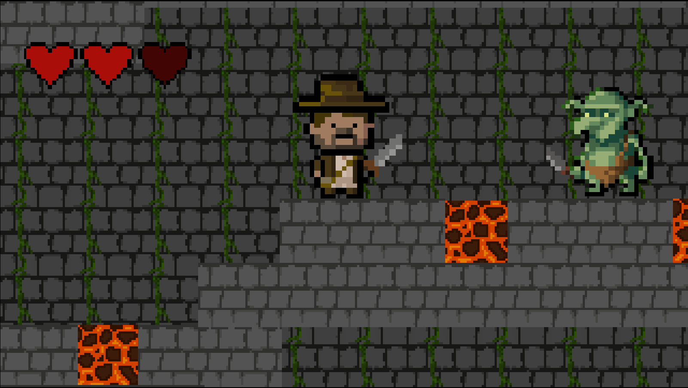

Tom HACOT
Etudiant en BUT Informatique
Voir mes projets
Je suis Tom, j'ai 17 ans, je suis passionné de jeux vidéo et d'informatique depuis toujours et depuis quelques années, je m'intéresse beaucoup à la programmation. C'est pour cette raison que j'ai choisi de faire un BUT Informatique à l'IUT de Sète et que j'aimerais poursuivre le parcours RACDV (Réalisation d'Applications : Conception, Développement, Validation) en deuxième année.
J'ai choisi cette formation parce qu'elle apporte beaucoup de pratique et qu'elle peut être suivie en alternance.
Je recherche actuellement une entreprise pour m'accueillir en alternance sur un rythme de 2 semaines en entreprise/2 semaines à l'IUT.
Je suis prêt à coder, apprendre et m'investir dans tous vos projets !
Notions de bases/intermédiaires :
Testés :
IUT informatique (Sète)
Parcours souhaité : RACDV (Réalisation d'Applications : Conception, Développement, Validation). Volonté de travailler en alternance dès la 2e année.
Lycée René Char (Avignon)
Obtention du diplôme du baccalauréat général avec spécialités mathématiques et NSI avec mention Bien (15.67 / 20).
Collège Anne Frank (Morières-lès-Avignon)
Obtention du diplôme du brevet avec mention Très bien (784 / 800).

Jeu réalisé sur Unity dans le cadre de la game jam Cozy Winter Jam 2026.
J'ai codé les effets des mirroirs, lentilles convergentes et divergentes sur le rayon lumineux et j'ai fait le level design du jeu.
J'ai également fait le main menu.

Jeu réalisé sur Roblox pour m'entrainer au Luau.
J'ai codé la gestion de l'appartenance d'un terrain, le système d'argent et l'apparition des éléments et fais les décors.

Jeu réalisé sur Construct 3 pour essayer le moteur de jeu et apprendre à l'utiliser. J'ai fait le système de déplacements du joueur, le système d'attaque du joueur et des ennemis, la gestion de la vie du joueur et les conditions de morts, et j'ai fait le level design.
Voir le projet
Deuxième jeu réalisé sur Construct 3 pour essayer le moteur de jeu et apprendre à l'utiliser. J'ai fait le système de déplacements du joueur, la gestion de la vie du joueur et les conditions de morts, et j'ai fait le level design.
Voir le projet
Jeu réalisé sur Unity (C#) pour apprendre à utiliser le moteur dans le cadre du Cours création de jeux vidéos à Digi Activity.
J'ai codé les mouvements du joueur et fait le level design.

Jeu réalisé sur Unreal Engine pour essayer le moteur de jeu et essayer le Blueprint. J'ai codé le système de déplacements du joueur (marche, sauts, course avec stamina) et j'ai ajouté des animations au personnage du joueur correspondant à chacune de ces actions.
Voir le projet
Jeu réalisé en Python dans le cadre d'un stage Digi Activity pour apprendre ce langage. J'ai programmé la génération d'un code aléatoire, le système de choix proposés au joueur et la vérification de la correspondance du code donné par le joueur.
Voir le projet
Jeu réalisé sur GameMaker Studio dans le cadre de la game jam Micro Jam 052: Winter. J'ai voulu apprendre à utiliser ce moteur de jeu et j'ai décidé de le faire dans le cadre de cette jam. J'ai codé le système de déplacement et de tir du joueur ainsi que le système de vie et j'ai créé certains décors.
Voir le projet